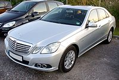

headder
Легкови́й автомобі́ль
Легкови́й автомобі́ль — автомобіль з кількістю місць для сидіння не більше дев'яти, з місцем водія включно, який за своєю конструкцією та обладнанням призначений для перевезення пасажирів та їхнього багажу із забезпеченням необхідного комфорту та безпеки.
Поділяються на класи:
Клас А Сюди належать невеликі «міні» автомашини, які найчастіше використовуються у містах, для поїздки на дачу, для подорожей вони не дуже підходять. Ширина такого автомобіля — до 1,6 метрів, довжина — не більше 3,6 метрів.
Клас B Це малогабаритні автомобілі малого класу. Найчастіше їх використовують для приміських та міських поїздок. У цих машин довжина складає не більше 4 метрів.
Клас С Це автомашини нижчого середнього класу, так званий гольф-клас. Ширина кузова складає від 1,6 до 1,75 метрів, довжина від 3,9 до 4,4 метрів.
Клас D Це автомашини середнього класу.
Клас E Це машини вищого середнього класу.
Клас F До цього класу належать дуже дорогі автомобілі, так званого представницького класу. Ширина машини від 1,7 метрів, довжина від 4,6 метрів.
Легкові автомобілі класифікуються також за типом кузова:
•закриті − седан, двохдверний седан, хетчбек, купе, лімузин, мінівен, хардтоп, таун-кар, комбі, ліфтбек, брогам;
•відкриті − кабріолет, фаетон, ландо, тарга, родстер, спайдер;
•вантажопасажирські − пікап, фургон, універсал.

© Powered by Igor Khodachok 2020